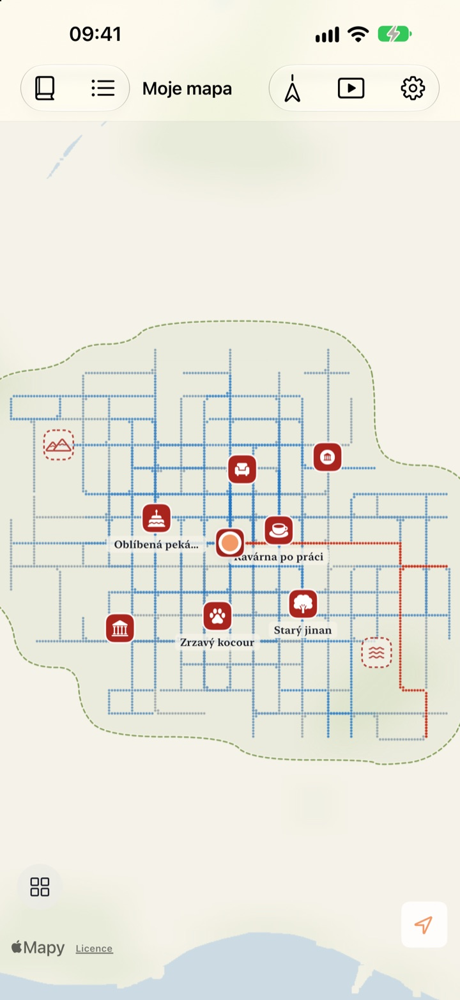
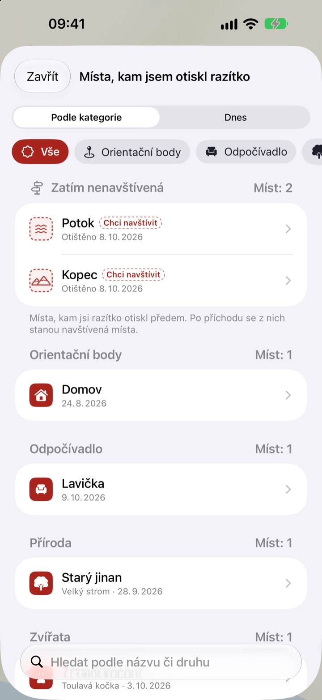
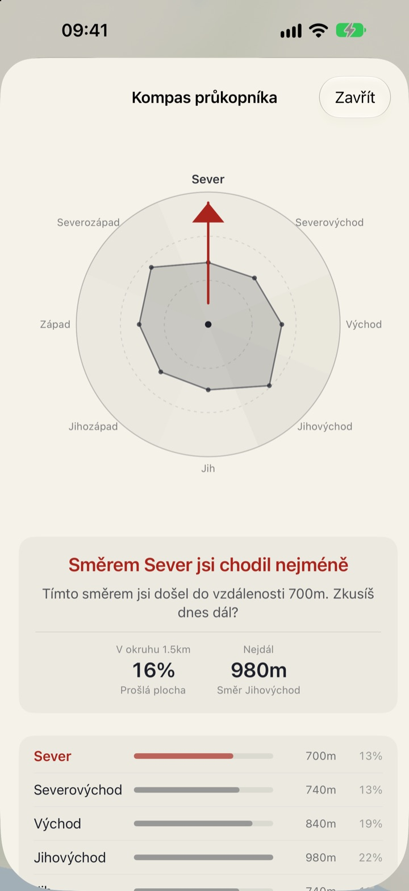
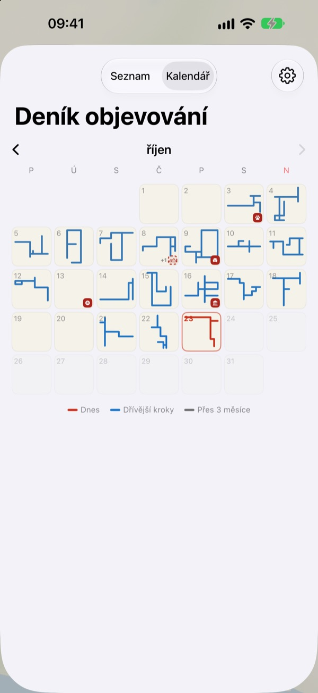

Mapa, která roste
jen pod vašima nohama
Začíná jako prázdný list papíru. Vyplňují se jen místa, kudy projdete pěšky, tečku po tečce, a stejná ulice prošlá stokrát ji nerozšíří. Chcete větší mapu? Vydejte se novou cestou.
Všechny funkce jsou zdarma a bez reklam.

Vyzkoušejte si procházku
Táhněte prstem nebo myší po papíře a jdete. Modré tečky jsou ulice, kudy jste už šli dřív. Sledujte, jak se Dnešní cesta mění, když jdete po starých stopách, a jak, když zamíříte jinam.
Chodíte denně stejnými ulicemi?
Krokoměr počítá kroky, ale neptá se, kam vedly. Cesta z domu na stanici a zpátky kruh klidně zaplní, a boční ulička hned vedle tak zůstane léta neznámá. Buktu Buktu počítá jen cesty, kudy jdete poprvé, a tak máte dnes důvod zajít si o blok dál.
Razítka pro místa, kde jste byli a kam chcete
Otiskněte razítko tam, kde stojíte, nebo podržte prst kdekoli na mapě. Na výběr je 212 razítek rozdělených do kategorií.
Razítko na místě, kudy jste ještě nešli, zůstane jako místo k navštívení, a jakmile tam opravdu dojdete, změní se na navštívené. Vyfoťte vývěsní štít obchodu, pozadí se odstřihne a štít se na tom místě postaví jako samolepka.

Příští procházka: směr, kam chodíte nejméně
Kompas průkopníka rozdělí okolí do osmi směrů a ukáže ten, kterým jste chodili nejméně.
Dnešní stopy seřadí místa, kde jste se dnes zastavili, i s tím, kolik jste mezi nimi ušli.

Každý den zanechá tvar
Kalendář místo čísla kreslí tvar procházky každého dne. Pište si deník s textem a fotkami a sledujte, kolik z každé procházky byl nový terén.
Zvolte období a podívejte se, jak se vaše mapa kreslí, jako video, které můžete exportovat.

Tři kroky na začátek
- 1
Otevřete aplikaci
Rozloží se prázdný list papíru.
- 2
Povolte polohu
Zvolte Vždy a zapněte Pohyb a kondice, aby se procházky zaznamenávaly i bez otevírání aplikace.
- 3
Vyrazte ven
Čím méně známá ulice, tím víc mapa roste.
Jak číst mapu
- Červené tečky
- kudy jste šli dnes
- Indigové tečky
- dřívější kroky, tmavší tam, kudy chodíte nejčastěji
- Šedé tečky
- místa, kam jste se nevrátili přes tři měsíce. Blednou, ale nikdy nezmizí
- Čárkované razítko
- místo k navštívení. Jakmile tam dojdete, stane se navštíveným
- Cesty, které jsem nakreslil
- celková délka všech cest, kudy jste šli poprvé
- Dnešní cesta
- kolik z dnešní chůze bylo nového
- Zobrazit vše
- v Nastavení, otevře Kompas průkopníka, Dnešní stopy a film s kreslením mapy
Vybrat si můžete tušovou mapu, nebo Kreslenou mapu.
Všechny funkce zdarma
Zdarma
- Mapa, která se plní jen tam, kudy chodíte, se sledováním nových cest
- 212 razítek a samolepky z vývěsních štítů
- Kompas průkopníka a Dnešní stopy
- Kalendář a deník s textem a fotkami
- Export videa, jak se kreslí vaše mapa
- Widgety na plochu a zamčenou obrazovku
- Synchronizace mezi zařízeními přes iCloud
Podpořte vývojáře
- Pokud chcete, pošlete v Nastavení malé spropitné
- Spropitné nic neodemyká. Aplikace je stejná tak i tak
Bez reklam, bez předplatného.
Otázky
Po procházce se na mapě nic neobjevilo.
Otevřete Nastavení > Buktu Buktu > Poloha, zvolte Vždy a zapněte Pohyb a kondice. Záznam pak běží i se zavřenou aplikací. Pokud jste v nastavení aplikace zvolili úsporný režim záznamu, otevřete aplikaci před odchodem. Polohy s nízkou přesností se ukládají, ale nekreslí.
Zaznamenávají se cesty autem nebo metrem?
Ne. Podle údajů o pohybu a rychlosti kreslí jen chůzi a běh a úseky, které vypadají jako jízda vozidlem, vynechá. Občas se může splést.
Chodím denně stejnou trasou a mapa neroste.
Tak zní pravidlo. Vše do 30 m od míst, kudy jste už šli, se počítá jako stejná cesta, takže k údaji „Cesty, které jsem nakreslil“ přibývají jen cesty prošlé poprvé. I chodník na druhé straně ulice se počítá jako stejná cesta. Kompas průkopníka ukáže, kudy jste chodili nejméně.
Posílá se moje poloha někam?
Vývojáři ne. Kroky, razítka, deník a fotky zůstávají ve vašem zařízení a ve vašem soukromém iCloudu a vývojář je nevidí. Anonymní statistiky používání nikdy neobsahují souřadnice, text deníku, názvy míst ani fotky. K převodu souřadnic na názvy míst se používají služby Map Apple. Podrobnosti najdete v Zásadách ochrany osobních údajů níže.
Přenesou se záznamy do nového zařízení?
Ano. Na novém zařízení se přihlaste stejným účtem Apple a nechte zapnutý iCloud. Kroky, razítka, deník i fotky půjdou s vámi.
Jak smažu razítko nebo fotku?
Razítka smažete v seznamu Místa, kam jsem otiskl razítko, fotku v deníku smažete podržením prstu. Možnost smazat všechny cesty a záznamy v deníku najednou máme v plánu.
Jak přidám widget?
Podržte prst na ploše, klepněte na Upravit > Přidat widget a vyberte Buktu Buktu. Na zamčené obrazovce podržte prst a klepněte na Přizpůsobit. Widget na ploše ukazuje tvar a délku dnešní cesty, na zamčené obrazovce dnešní vzdálenost.
Co potřebuji?
iPhone se systémem iOS 17.0 nebo novějším.
Jak vás kontaktovat?
Pošlete zpětnou vazbu z nastavení aplikace nebo nám napište na adresu níže. Odpovíme co nejdřív.
Dotazy nebo připomínky? Napište na leeo@kakao.com.